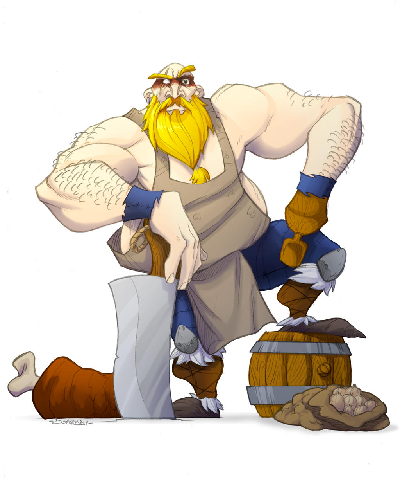

Traditional Norwegian Recipes

Here's a collection of traditional Norwegian recipes, highlighting various aspects of Norway's rich culinary heritage.
Raspeballer (Potato Dumplings)
Kjøttkaker (Meatballs)
Lapskaus (Norwegian Stew)
Koldtbord (Cold Table)
Kransekake (Almond Ring Cake)
Each recipe includes a brief description, ingredients, and instructions.